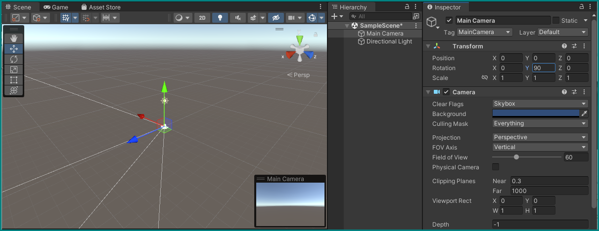

First Unity Project — getting to know the Editors

Create a first project using the Unity Hub
If not already running on your computer, start the Unity Hub (see the icon above). Depending on previous use there may be already projects listed in its window — if so, disregard them for now and just click the New project button.

You will be presented with a dialog to configure the project. Usually it's already all set up correctly, but to make sure just verify the following points:
- Editor Version should be the latest one from the list (2021.3.11f1 in our case),
- The 3D template should be selected,
- Don't forget to give your first project a name and choose a location (the default works here).
Pushing the Create project button will open the Unity Editor and tell it create a new project with the above parameters. This may take some time…

Setting up the Editor
Once this process is complete, you will see a the Unity Editor in its default configuration, showing a blank scene.

You can leave this as is, or drag the tab handles and section dividers around to create a more comfortable working environment. One particularly important change would be to permanently reveal the Console window by dragging the Project window it's being obscured by to a new location. Below is our suggested arrangement with new placements of the Hierarchy, Project, and Console windows.

The biggest part should show you the Scene View, where you can freely navigate using common 3D software controls, like zooming in and out with the mouse wheel, rotating by holding the right mouse button, and translating your position by holding the middle mouse button. See the official Unity manual on more information on this.
Scene, Hierarchy, and Camera Views + Inspector
The Scene View shows you the contents of your currently open Scene — a kind of super Object that holds all other objects. A full overview of all objects and their relationships is shown in the Hierarchy window — as you can see, it currently only contains our only Scene (SampleScene), which holds a simple Directional Light for illuminating the world and the Main Camera that lets a player see it. Let's select that camera by clicking on it in the Hierarchy or on its Gizmo (camera icon) in the Scene view:

It is now highlighted in both Scene and Hierarchy views, as shown by a highlight and the appearance of arrows pointing in the cardinal directions around the object. In addition, a view from this camera now shows up in the Scene view as a floating window: this is what a player of this game will see if we run it. The same view is visible in a full window by selecting the Game tab in the Scene window.
Another thing that happens when we select a Game Object like this camera in the editor is the appearance of this object's Inspector in its previously empty window to the top right. This window allows us to view and change every single aspect of any Game Object, which may differ by their type. One Component all possible objects, be they cameras, lights, or dinosaur models share is their Transform: a grid that contains the coordinates of their position, rotation vector, and its scale.
Transforms and Hierarchies
In the case of the camera and light and any other objects directly under the SampleScene Scene object, these coordinates are equivalent to their "world" coordinates. For any object that sits below another in the Hierarchy, these coordinates are basically offset by those of their Parent. See Unity's documentation on the Hierarchy and Transforms for more details.
Let's set the camera's Position to the origin and rotate it to point in the blue arrow's (the Z-axis) direction by editing its Transform Component accordingly: set Position X=0, Y=0, Z=0 and Rotation X=0, Y=90, Z=0.

Creating a first object
Let's bring a cube into the scene.
While you can go to the main menu under GameObject and select what you want to create, a more precise way is to right-click on an empty part of the Hierarchy and selecting 3D Object → Cube. This will create a basic cube GameObject inside our Scene, with a default Transform. If we had right-clicked on any existing object in the scene instead of on an empty space, we would have created a child object that would be tied to its parent, and this is not what we want in this case.

If you double-click on the new Cube object in the hierarchy, the scene view will fully zoom into it, showing that it basically swallowed our camera. If you select our camera object again, its view (or the Game View) won't show the cube — the way most 3D engines work, objects are transparent from the inside.

Let's move the box to a position where the camera can see it, and also try making it smaller by setting its transform component to Position X=2, Y=0, Z=0 and Scale X=0.2, Y=0.2, Z=0.2.
Selecting our camera again, we can now see a small box appearing at the center of its view. If the cube is now gone from our scene view, just zoom out a bit, or double-click it again in the hierarchy.

You can keep playing around with the cube's Transform component to move it around and scale it, or also use the handles in the scene view: dragging one of the three arrows or the squares between them will also change the transform accordingly.
More on Positioning
There are many more ways to change the transform with the mouse. You can switch transform modes by pressing W, E, R, or by selecting the different icons in the little floating window in the scene view to move, rotate, scale an object, respectively. See the Unity Documentation for more details on this.
A first animation
All we did so far is not much different than using any basic 3D creation software. Where a game engine like Unity differs, is its ability of freely scripting the objects we place in scenes, using programming languages.
Creating a first script file
Let's try this out by making a script that will constantly rotate our cube. The easiest way to do this is by clicking the Add Component button at the bottom of the cube's Inspector and just starting to type the name of the script we want to create in the search field, in this case let's name it Rotating. It will automatically understand that we want to create a new script, so select that option and then confirm by pressing Create and Add.

After a bit of waiting, the Unity editor will have created a new file inside its Assets folder, which you can see inside the Project View by clicking on the new Script component in the cube's Inspector.
The newly created script — C#!
Double-clicking the Script field in the cube's Script component, or on the script's icon in the Project view will bring up a text editor (Visual Studio Code in this case, if everything is set up properly) with the script file, named Rotating.cs already opened. With the editor you can now make changes to the script! The Unity editor will take all changes into account every time you save your changes in the text editor and switch focus back to the Unity editor.
Every script you create using the above way will be a C#, or C Sharp script, as can be seen by its ".cs" ending. Unity will always create a new script file with a basic structure pre-written, looking like this:
using System.Collections;
using System.Collections.Generic;
using UnityEngine;
public class Rotating : MonoBehaviour
{
// Start is called before the first frame update
void Start()
{
}
// Update is called once per frame
void Update()
{
}
}
The first three lines (beginning with using) tell Unity which Software Libraries to load before executing any of the code, which allow it to access e.g. Unity's built-in functionalities and data types, or anything else you might want to include.
The next block, surrounded by the curly brackets { } of public class Rotating : MonoBehaviour encompass all functionality of this script, in the simplest case. It tells Unity that this block defines a MonoBehavior object, which is the kind of script object that one can attach to GameObjects in the Unity's hierarchy.
Within the curly brackets there are already the outlines of two standard functions that many scripts use: void Start() and void Update(). As already explained by the comments above them (any lines that start with // are disregarded by Unity and are only there for the programmer to read), the code within the curly brackets of Start() will be executed only once, at the very start of each run of the "game," while the contents of Update() will be called every time the screen refreshes. The empty round brackets ( ) following the names of these functions mean that they don't accept any input variables, and void before their names signifies that they don't output anything, either.
Running the script
As all this code is still basically empty, running it won't change anything — you can try this by pressing the Play button at the top middle of the Unity editor, which will compile any scripts you might have changed, switch to the Game view (the view of our main camera), and execute all scripts that are attached to GameObjects within the hierarchy.

As expected, the game view shows the main camera's perspective on a static cube. You can still access the cube's inspector by clicking on it in the hierarchy, where you can make changes to its transform by e.g. clicking and dragging the desired coordinates.
Exiting the Play mode by again pressing the play button will reset any changes that we made in the hierarchy and inspector back to how they were before, and will again show the scene view by default.
Editing the script — constant rotation around a fixed axis
Let's edit the Rotating.cs script so that it actually does something when the game runs.
What we want to happen is to change something about the cube's transform every time the screen refreshes. This can be accomplished by adding one line of code inside the given void Update() function, so that it looks like this:
What this does it to call the Rotate() function of the GameObject's transform component with the parameters Vector3.up for the rotation axis, and 30.0f * Time.deltaTime for the rotation angle — for every frame that the game runs. If you type this yourself in the code editor instead of copying and pasting, you might see code completion kicking in, which offers suggestions and explanations of each of these fields.
Vector3.up is short for a three-dimensional vector that points straight up, and Time.deltaTime is the time that has passed since the last frame before the current one is called. 30.0f is the simply a convention of writing floating point numbers, as opposed to integers. If we save this script file, go back to Unity and hit the Play button, we will once again see the camera's view in the Game view, with the cube steadily rotating around its vertical axis, at 30 degrees per second.
Making the script interactive
For now, this rotation is fixed — while you can still manually change the transform in the game view as above, the cube keeps rotating. You can try move it around or rotate it around the X or Z axes to see its automatic rotation change direction relative to the world, but staying constant relative to the cube.
To make the automatic rotation more interactive, we can edit our script to include variables, which need to be placed outside the Update() method, but still within the curly brackets of the Rotating class. Let's change these parts of the script to look like this:
public class Rotating : MonoBehaviour
{
[Tooltip("Rotation angle per second")] public float speed = 30.0f;
[Tooltip("Vector of the rotation axis")] public Vector3 axis = Vector3.up;
// Update is called once per frame
void Update() {
transform.Rotate(axis, speed * Time.deltaTime);
}
}
Variables are introduced by stating their type first, then their name, like float speed — a floating point number that we reference by the name "speed." If we want to make a variable accessible to scripts outside the its current scope (the Rotating MonoBehavior in this case), we need to prefix them with public. Like this we can also directly see their current value in the Unity's inspector, as parameters of the cube's script component.
It is often necessary, and usually a good practice to initialize new variables with a certain default value, which is assigned with the equals sign = and a following value. Here we can give them exactly what we had previously put in to the parameters for the Rotate() function: 30.0f for speed, and Vector3.up for axis.
Finally, we need to replace the fixed values in the transform.Rotate() call with our new variables: transform.Rotate(axis, speed * Time.deltaTime); does that. Optionally, we can make these parameters that are now exposed in the inspector even more legible by adding the tooltips in the format shown above, before the public definitions of the variables.
Try it out: save the script, go back to the Unity editor, hit Play. You see the same rotation going on, but can now directly edit the rotation's parameters the same way you can interact with the cube's transform!
Online/offline editing of values
Like before, changes in the inspector that happen while the game is running will be reverted to their default when you stop, but will stay if you make them while it's not running. If you change the axis or rotation speed while the game is off, the new values will override what you have as initial values in the code. If you go back to the code and put in new initial values and save, then these will overwrite anything currently set in the inspector.
Warning
Always make sure that the game is not playing while you make changes you want to keep, especially when adding/removing objects and components!
Combining animations
A second script to move it
To practice more with animating an object, let's create a new script for the cube as we did before, by adding a new script component and naming it Moving. As before, we can keep the pre-build structure and just add to it.
With the new script, we want to move the cube between two specified points in space, at a certain speed. Let's add these variables to the Moving MonoBehavior, similar to how we did it above:
public class Moving : MonoBehaviour
{
[Tooltip("Units per second")] public float speed = 1.0f;
[Tooltip("Starting position in 3D space")] public Vector3 startPoint = new Vector3(2, 0, -1);
[Tooltip("End position in 3D space")] public Vector3 endPoint = new Vector3(2, 0, 1);
// Update is called once per frame
void Update() {
}
}
The main difference is how we're defining new Vectors now for startPoint and endPoing: we're initializing them with their coordinates. Save this code, and make sure that the this new component appears in the cube's inspector with the correct values we gave it in the code. If not, you can change the speed and points to their values right there.
Interpolation
To move between these two points, we need to interpolate between them as time passes. For that, let's add another variable that will keep track of where in between the two points the cube should be. This time we keep it private — it will not be accessible by outside scripts, as want to only change it internally. We can still display its value in the inspector though by adding a line above its declaration to make it a "serialized field:"
public class Moving : MonoBehaviour
{
[Tooltip("Units per second")] public float speed = 1.0f;
[Tooltip("Starting position in 3D space")] public Vector3 startPoint = new Vector3(2, 0, -1);
[Tooltip("End position in 3D space")] public Vector3 endPoint = new Vector3(2, 0, 1);
[SerializeField]
private float interpolator = -1.0f;
// Update is called once per frame
void Update() {
}
We set it to -1 initially, and want to constantly increase it. This is accomplished by the += operation in the Update() loop: we take its current value and add to it the time since the last frame multiplied by the speed, as before.
When it reaches or exceeds 1 we will reset it back to -1, so that it will loop forever between these values. This is done by testing it inside an if() statement: if the contents of its round brackets () are true (is the interpolator greater than or equal to one?), then the contents within its curly brackets {} are executed: {set the interpolator back to -1}.
public class Moving : MonoBehaviour
{
[Tooltip("Units per second")] public float speed = 1.0f;
[Tooltip("Starting position in 3D space")] public Vector3 startPoint = new Vector3(2, 0, -1);
[Tooltip("End position in 3D space")] public Vector3 endPoint = new Vector3(2, 0, 1);
[SerializeField]
private float interpolator = -1.0f;
// Update is called once per frame
void Update() {
interpolator += speed * Time.deltaTime;
if (interpolator >= 1)
{
interpolator = -1;
}
}
To translate this into a movement for the cube, we need this interpolator to affect the position part of its transform. For that we can use the Lerp() function of Vector3: it takes a starting and and ending point, and a value between zero and one that lets it calculate a new point in between.
Since our interpolator goes between -1 and 1, we need to alter it slightly before we give to this Lerp() function, which we can do directly inside its parameter field:
public class Moving : MonoBehaviour
{
[Tooltip("Units per second")] public float speed = 1.0f;
[Tooltip("Starting position in 3D space")] public Vector3 startPoint = new Vector3(2, 0, -1);
[Tooltip("End position in 3D space")] public Vector3 endPoint = new Vector3(2, 0, 1);
[SerializeField]
private float interpolator = -1.0f;
// Update is called once per frame
void Update() {
interpolator += speed * Time.deltaTime;
if (interpolator >= 1)
{
interpolator = -1;
}
transform.position = Vector3.Lerp(startPoint, endPoint, interpolator < 0 ? -interpolator : interpolator);
}
?: or Ternary Conditional Operator
The structure with the form x < y ? a : b is a handy shortcut: we test if x is smaller than y (or any other comparison we need here), and return a if true and b if false.
Here give the Lerp() function the negative of interpolator if it's smaller than zero, thus making it actually positive again. If interpolator already is positive, it is directly given to Lerp(). Enter this code, save it, and run the game:
Interplay
You can now see the cube moving from side to side, while still spinning from its Rotating script! As before, you can play around with the parameters to change the speed (of both the rotation and translation) and with the starting and end points. You can also disable any of the two scripts at any time during the game by clicking their checkmark, which will freeze their execution and stop them influencing the cube.
Connecting objects
Instead of this mad spinning, let's make this cube rotate face the camera at all times instead.
Looking at
First, deactivate the Rotating component while outside the game mode, so that this change sticks. Then, let's add two lines to our Moving script:
public class Moving : MonoBehaviour
{
[Tooltip("Units per second")] public float speed = 1.0f;
[Tooltip("Starting position in 3D space")] public Vector3 startPoint = new Vector3(2, 0, -1);
[Tooltip("End position in 3D space")] public Vector3 endPoint = new Vector3(2, 0, 1);
[Tooltip("Object to face")] public Transform targetObject;
[SerializeField]
private float interpolator = -1.0f;
// Update is called once per frame
void Update() {
interpolator += speed * Time.deltaTime;
if (interpolator >= 1)
{
interpolator = -1;
}
transform.position = Vector3.Lerp(startPoint, endPoint, interpolator < 0 ? -interpolator : interpolator);
transform.LookAt(targetObject);
}
We now gave it a new variable (targetObject), this time a Transform. This lets us reference any other GameObject's transform, and therefore e.g. its position. The new last line within the Update() loop uses the LookAt() method from the transform class, which will orient the current GameObject's transform to… look at, or face in the direction of another transform that we give it.
Referencing objects
Note how we did not initialize this variable in the code; we will instead assign it from the inspector. One way to do it is to click the target icon that now sits in the new variable field in the cube's inspector and select the Main Camera object from the list that appears, or simply drag the Main Camera from the hierarchy into the field:
We can see the cube now moving from side to side and always facing the camera if we play it, but to display this new behavior more clearly we can arrange our Unity editor to show the scene and game views at the same time to have an external view. Changing the starting and end points, or the position of the camera will not hinder from lookAt always adjusting the cube's position correctly:
If everything works and you've understood every part, you should have now have the basics of Unity down, congratulations!
Now onwards to some actual VR — expect less handholding from now on ;-)
Ask for help
Remember, if anything is unclear or doesn't work: don't hesitate to ask the tutors.